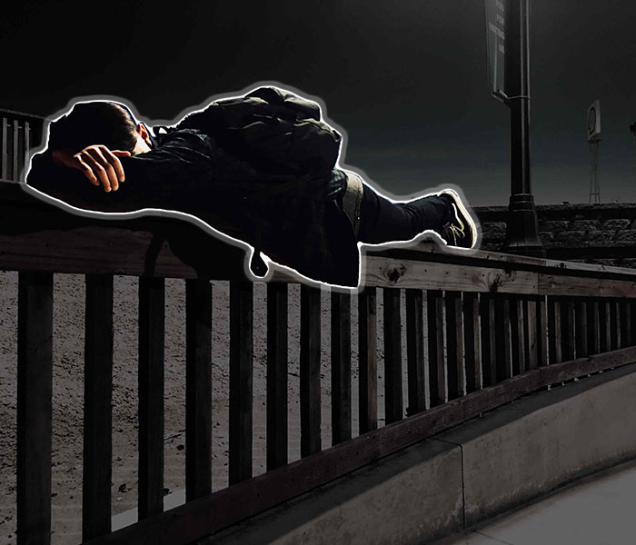

Project 1

This is one of the first major projects that I’ve done in the beginning of the year. This project is supposed to give information on an endangered species, and have a call to action on how to save it from going extinct. The species that my group decided to do was the Silky Sifaka. I was in charge of the general information page and the reference page.
This project was done by using a program called Brackets. In Brackets, we can code HTML and CSS, along with other programing languages. While doing the project, we didn’t know about flexbox, so most of the spacing is done by floats. We first started off by writing down all of our information in Brackets. After that was done, we styles our web pages using CSS.
We had quite a bit of problems when styling the website, but I think the major problem we had was with floats. In my words, I can describe floats as a big pain in the bottom. I wasn’t able to get many things symmetrical, and, sometimes, things I did with floats would totally mess up the page. Other than the misery of trying to get floats to work, there wasn’t any other major problems.
Project 2

For this project, the class had to make a website about digital ethics. The class was split into groups of three or more, and each group was assigned to do a topic. The topic that was assigned to my group was the conscious creator of content and digital footprint. My group had five people in it, so three people worked on the website while the other two people worked on proofreading. I was part of the three people who worked on the website.
Like the other projects I’ve done, this website was coded on Brackets. We used HTML and CSS to code it. In the beginning of the project, the Web Application class and the Cybersecurity class got together to gather information about the topic. We found other subtopics to our topic to talk about. The first set of notes was just a messy rough draft, and the second set of notes is more clean and smaller. We all used Google Docs to get the notes, and we used Scrumblr to make announcements, and to check on the progress. After we were done with note gathering, the Web Applications team started on the website.
In the process of making the website, we had a few problems. One of them was communication. We didn’t really communicate effectively, because the way we coded was different. Because of this, some things didn’t work with styling. To fix this, we just copied the style of code off one another so that the structure of the code looked the same.
Project 3
A skill that I am decent in is photoshop. I may not be the best at photoshop, but I can manipulate pictures to make them look better. The program I use to photoshop is, of course, Adobe Photoshop. Adobe photoshop has a lot of features to it, even though I might not use all of them. The things that I did to this photo is change the saturation, and give an outline to the person seen in the photo. I could have probably done more to make this picture look even better, but I was pretty satisfied how this already turned out. I just like how the person in the photo pops out because I made the background darker, and I gave the person a few features to make him pop out.